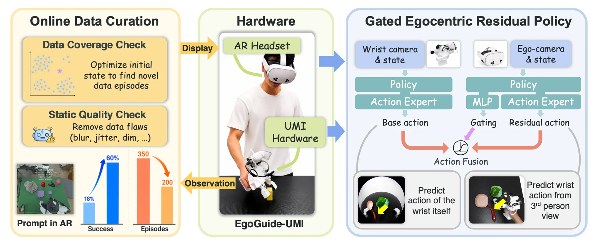
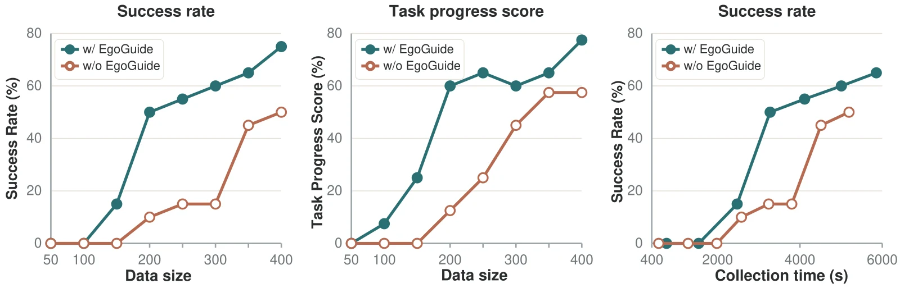

EgoGuide: Egocentric Guidance for Efficient Robot-Free Demonstration Collection and Learning
Shanghai Jiao Tong University · Shanghai Innovation Institute · Beijing Institute for General Artificial Intelligence

Guide collection and correct actions with scene context
Coverage feedback in AR
The handheld gripper and headset record synchronized camera views, poses, and gripper width. Before recording, the headset shows which wrist views, head views, and wrist poses are underrepresented. Collectors can also start midway through a task to cover missed states.
Gated egocentric residual policy
A wrist-camera policy predicts the action. A separate branch uses the head camera and scene context to adjust that action when the wrist view is occluded or ambiguous.
Real-robot results
Each policy ran 20 trials on a Flexiv Rizon 4 with randomized object positions. Tasks included picking a cube, sorting peppers, storing garlic in a drawer, and rotating a Rubik’s Cube.
Takeaway With 200 pepper-sorting demonstrations, guided collection raised success from 10% to 50%. Unguided collection needed 400 demonstrations to reach 50%.

In a separate policy comparison with the same 400 pepper-sorting demonstrations, the gated head-camera branch improved success from 75% to 80% and task progress from 77.5% to 87.5%. Table 2